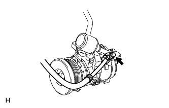
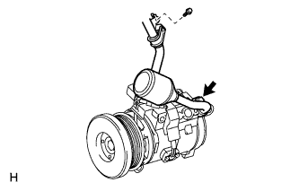
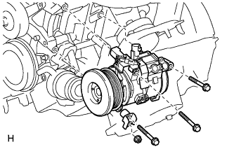

COMPRESSOR (for 2UZ-FE) > REMOVAL |
| 1. REMOVE UPPER RADIATOR SUPPORT SEAL |
Remove the 7 clips and radiator support seal.

| 2. RECOVER REFRIGERANT FROM REFRIGERATION SYSTEM |
Start the engine.
Turn the A/C switch on.
Operate the cooler compressor while the engine speed is approximately 1000 rpm for 5 to 6 minutes to circulate the refrigerant and collect the compressor oil remaining in each component into the cooler compressor.
Stop the engine.
Recover the refrigerant from the A/C system using a refrigerant recovery unit.
| 3. REMOVE FRONT FENDER APRON SEAL LH |
 |
Remove the 4 clips and seal.
| 4. REMOVE FAN AND GENERATOR V BELT |
 |
Loosen the belt tension by turning the belt tensioner counterclockwise, and then remove the fan and generator V belt.
| 5. DISCONNECT NO. 1 COOLER REFRIGERANT DISCHARGE HOSE |
 |
Remove the bolt and disconnect the discharge hose from the cooler compressor.
Remove the O-ring from the discharge hose.
| 6. DISCONNECT SUCTION HOSE SUB-ASSEMBLY |
 |
Remove the 2 bolts and disconnect the suction hose from the cooler compressor.
Remove the O-ring from the suction hose.
| 7. REMOVE COOLER COMPRESSOR ASSEMBLY |
 |
Disconnect the connector.
Remove the 3 bolts, nut, cooler compressor and No. 1 compressor stay.